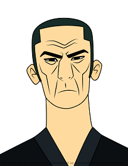

|  |
🦊 Shadowsan 🦊
University of Pennsylvania
Matsumoto Kokusai High School
Matsumoto Junior High School
Shadowsan was born in Matsumoto, Nagano, Japan, as Suhara, the younger brother of Hideo. As they grew, Hideo was the more scholarly and responsible sibling, while Suhara was the exact opposite. They lived a simple and poor life that Hideo was content with. However, Suhara believed he deserved more, so he decided to become a thief and joined the Yakuza. He stole the katana of a legendary samurai's daishō, on display at Matsumoto Castle's museum, where Hideo worked as a curator, as an initiation, but before he could steal the accompanying wakizashi, Hideo thwarted him and Suhara fled with the stolen sword, therefore severing his relationship with his brother and leading to their estrangement. |